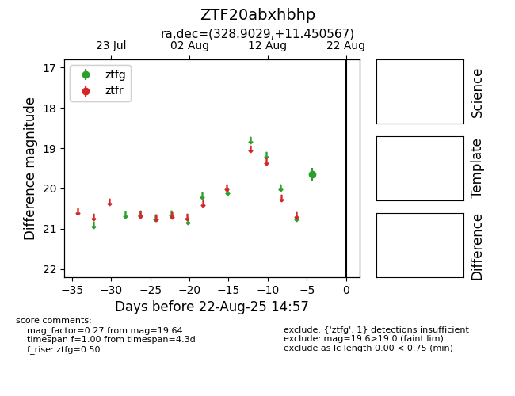

Target ZTF20abxhbhp at 2025-08-22 15:31, see:
FINK: fink-portal.org/ZTF20abxhbhp
Lasair: lasair-ztf.lsst.ac.uk/objects/ZTF20abxhbhp
ALeRCE: alerce.online/object/ZTF20abxhbhp
alt names
ZTF20abxhbhp (ztf,alerce)
coordinates:
equatorial (ra, dec) = (328.9029,+11.45057)
galactic (l, b) = (69.1590,-32.50668)
photometry
last atlaso=19.44, ztfg=19.64
6 atlaso, 1 ztfg detections
